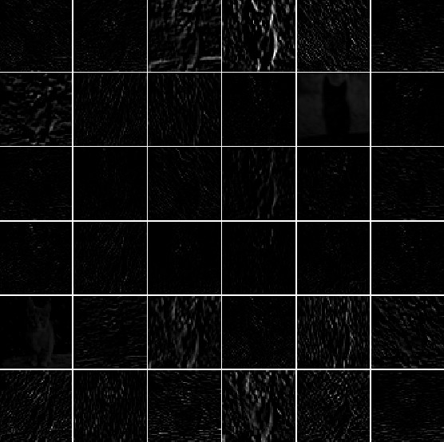
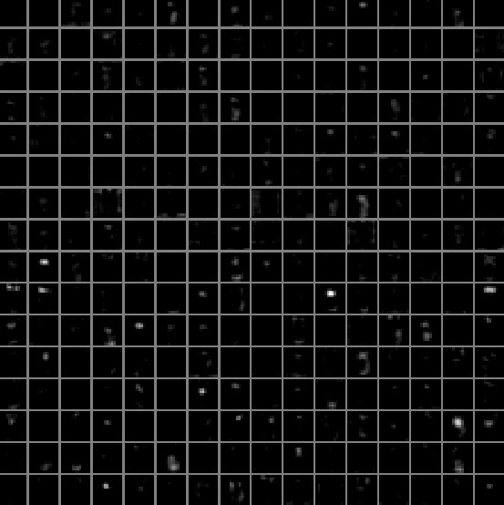
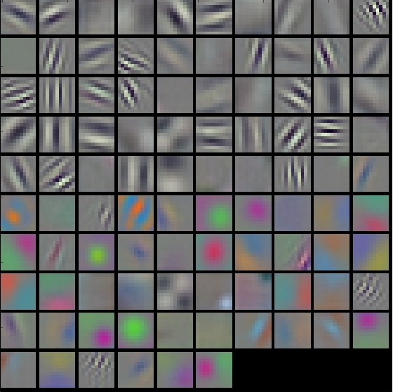
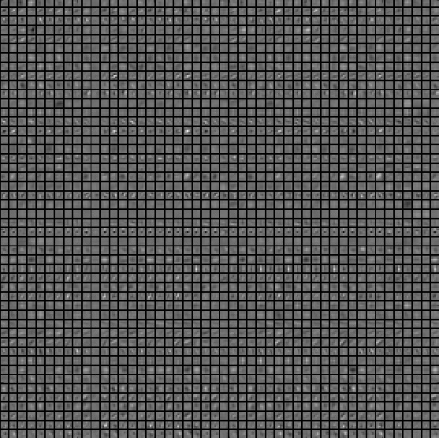
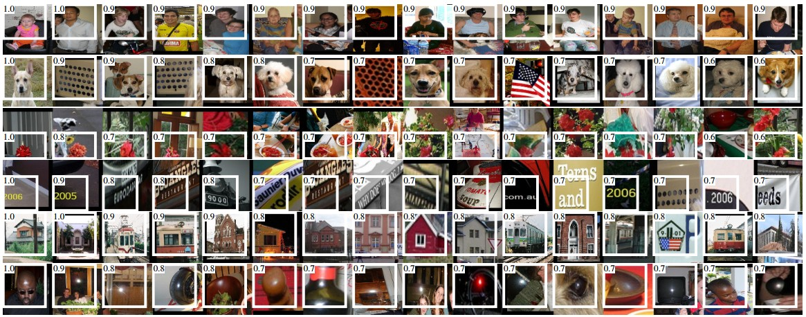
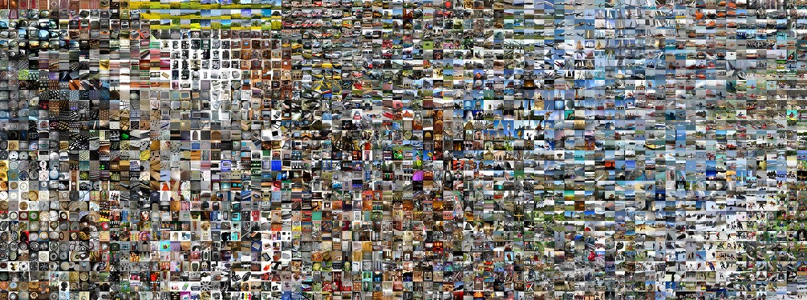
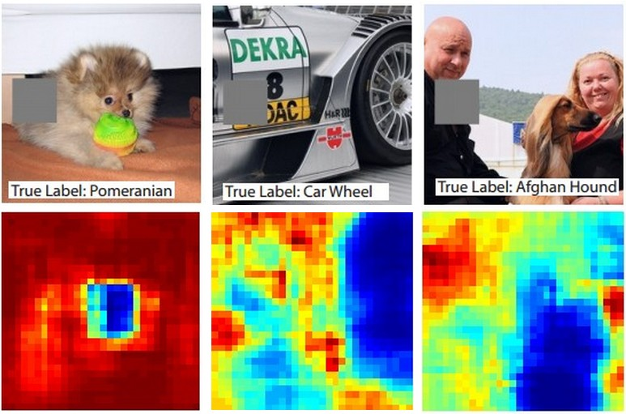

Aula 06 · Detecção de Objetos, Segmentação de Imagens, Visualização e Explicabilidade
Visualizando e entendendo ConvNets
⚠️ Este conteúdo é uma tradução para português, gerada automaticamente por IA, a partir do material original em inglês do curso CS231n (Stanford University). Consulte o link "Fonte original" abaixo para o texto original.
Fonte original (inglês): Visualizing what ConvNets learn · CS231n, Stanford University ↗
(esta página está em forma de rascunho)
Várias abordagens para entender e visualizar Redes Convolucionais foram desenvolvidas na literatura, em parte como resposta à crítica comum de que as características aprendidas por uma Rede Neural não são interpretáveis. Nesta seção, vamos passar brevemente por algumas dessas abordagens e trabalhos relacionados.
Visualizando as ativações e os pesos da primeira camada
Ativações das camadas. A técnica de visualização mais direta é mostrar as ativações da rede durante o forward pass. Em redes com ReLU, as ativações costumam começar com um aspecto relativamente difuso e denso, mas, conforme o treinamento avança, elas costumam ficar mais esparsas e localizadas. Uma armadilha perigosa, fácil de notar com essa visualização, é que alguns mapas de ativação podem ficar totalmente zerados para muitas entradas diferentes, o que pode indicar filtros mortos e ser sintoma de taxas de aprendizado altas.


Filtros CONV/FC. A segunda estratégia comum é visualizar os pesos. Eles costumam ser mais interpretáveis na primeira camada CONV, que olha diretamente para os pixels brutos, mas também é possível mostrar os pesos dos filtros em camadas mais profundas da rede. Vale a pena visualizar os pesos porque redes bem treinadas costumam exibir filtros bonitos e suaves, sem padrões ruidosos. Padrões ruidosos podem indicar uma rede que não foi treinada por tempo suficiente, ou possivelmente uma força de regularização muito baixa, que pode ter levado a overfitting.


Recuperando imagens que ativam um neurônio ao máximo
Outra técnica de visualização é pegar um grande conjunto de imagens, passá-las pela rede e registrar quais imagens ativam ao máximo algum neurônio. Podemos então visualizar essas imagens para entender o que o neurônio procura em seu campo receptivo. Uma visualização desse tipo (entre outras) aparece em Rich feature hierarchies for accurate object detection and semantic segmentation, de Ross Girshick et al.:

Um problema dessa abordagem é que os neurônios ReLU não têm necessariamente significado semântico por si sós. É mais apropriado pensar em múltiplos neurônios ReLU como os vetores de base de algum espaço que representa recortes de imagem. Em outras palavras, a visualização mostra os recortes na borda da nuvem de representações, ao longo dos eixos (arbitrários) que correspondem aos pesos dos filtros. Isso também pode ser visto pelo fato de que os neurônios de uma ConvNet operam linearmente sobre o espaço de entrada, então qualquer rotação arbitrária desse espaço não muda nada. Esse ponto foi aprofundado em Intriguing properties of neural networks, de Szegedy et al., em que os autores fazem uma visualização semelhante ao longo de direções arbitrárias no espaço de representação.
Incorporando os códigos com t-SNE
ConvNets podem ser interpretadas como transformando gradualmente as imagens numa representação em que as classes são separáveis por um classificador linear. Podemos ter uma ideia aproximada da topologia desse espaço incorporando as imagens em duas dimensões, de modo que sua representação de baixa dimensão tenha distâncias aproximadamente iguais às da representação de alta dimensão. Foram desenvolvidos muitos métodos de incorporação com a intuição de levar vetores de alta dimensão a um espaço de baixa dimensão preservando as distâncias entre pares de pontos. Entre eles, o t-SNE é um dos métodos mais conhecidos e produz, de forma consistente, resultados visualmente agradáveis.
Para produzir uma incorporação, podemos pegar um conjunto de imagens e usar a ConvNet para extrair os códigos da CNN (por exemplo, na AlexNet, o vetor de 4096 dimensões logo antes do classificador e, crucialmente, incluindo a não linearidade ReLU). Podemos então passá-los ao t-SNE e obter um vetor de 2 dimensões para cada imagem. As imagens correspondentes podem então ser visualizadas numa grade:

Ocluindo partes da imagem
Suponha que uma ConvNet classifique uma imagem como cachorro. Como ter certeza de que ela está de fato captando o cachorro na imagem, e não pistas de contexto do fundo ou algum outro objeto qualquer? Uma forma de investigar de qual parte da imagem vem uma previsão de classificação é plotar a probabilidade da classe de interesse (por exemplo, a classe cachorro) em função da posição de um objeto oclusor. Ou seja, percorremos regiões da imagem, zeramos um recorte da imagem e observamos a probabilidade da classe. Podemos visualizar essa probabilidade como um mapa de calor bidimensional. Essa abordagem foi usada em Visualizing and Understanding Convolutional Networks, de Matthew Zeiler:

Visualizando o gradiente dos dados e técnicas relacionadas
Gradiente dos dados.
Deep Inside Convolutional Networks: Visualising Image Classification Models and Saliency Maps
DeconvNet.
Visualizing and Understanding Convolutional Networks
Retropropagação guiada (Guided Backpropagation).
Striving for Simplicity: The All Convolutional Net
Reconstruindo imagens originais a partir de códigos da CNN
Understanding Deep Image Representations by Inverting Them
Quanta informação espacial é preservada?
Do ConvNets Learn Correspondence? (resumindo: sim)
Plotando o desempenho em função dos atributos da imagem
ImageNet Large Scale Visual Recognition Challenge
Enganando ConvNets
Explaining and Harnessing Adversarial Examples